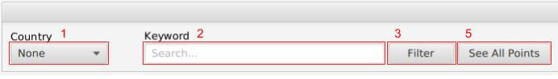

BlackBird User Manual
Introduction to BlackBird
The BlackBird application is designed to display and analyse aeronautical data. BlackBird can be used to display route data, flight data, airline data and airport data. With the data the the application can create various graphs to display analysed data.
Starting BlackBird
After opening the BlackBird program a window will appear (showing in Figure.!@#). From this window a menu bar holds two options, “File” and “Help”. The “Help” menu can be used to open the user manual (Help->User Manual).The “File” menu menu can be used to open a project (File->Project). If BlackBird has been used previously, the last session will be automatically opened. For more information about opening projects go to “Creating a New Project” or “Loading an Existing Project”.
Creating a New Project
To create a new project follow the “File” menu (File->Project->New). This will create a new project with no data loaded. All data fields in BlackBird will be empty. For help on add data to this empty project go to “Adding Data”.
Loading an Existing Project
To load an existing saved project follow the “File” menu (File->Project->Load). A file choosing window will appear, from this an SQLite file can be chosen and opened into BlackBird. If the SQLite file is not of the right format it will be corrected to include the tables required for the BlackBird project, this may delete data that is not of the correct format (if this occurs an Alert will be displayed). If the file is not an SQLite file a new project will be created. These changes will not be saved to the original file unless done so via the “Save” option (for information on saving go to “Saving a Project”). For information about adding data to the project go to “Adding Data”. For information about viewing data go to “Viewing and Filtering Data”. For information about exporting data go to “Exporting Data”. For information about deleting data go to “Deleting Data”.
Adding Data
In a project it is possible to add data to the project as singular entries or through a csv file. For information about adding singular entries go to “Adding Singular Entries” . For information about adding data from a csv file go to “Adding Data From a File”. For information about viewing added data go to “Viewing and Filtering Data”. For information about exporting added data go to “Exporting Data”. For information about deleting added data go to “Deleting Data”. For information about saving a project go to “Saving a Project”.
Adding Data From a File
Adding data to a project can be done through the “File” menu (File->Add Data). From the “File” menu a csv file can be added. From a csv file route data, flight data, airline data and airport data can be added. Data from a csv file can replace current data or be merged with current data. For information about merging data and replacing data go to “Merging and Replacing Data”. For information about adding route data from a csv file go to “Adding Route Data From a File”. For information about adding flight data from a csv file go to “Adding Flight Data From a File”. For information about adding airline data from a csv file go to “Adding Airline Data From a File”. For information about adding airport data from a csv file go to “Adding Airport Data From a File”.
Merging and Replacing Data
If data is being added, from a file, to a project that already contains data of that type a pop-up will be displayed. From this pop-up it is possible to choose to merge, replace or cancel. The “Merge” button will append data from the csv file to the existing data in the project (repeated data will not be added). The “Replace” button will remove existing data and replace it with the data in the csv file. The “Cancel” button will close the pop-up and nothing will be changed. Note: This does not occur where adding flight data.
Adding Route Data From a File
To add route data to a project follow the “File” menu (File->Add Data->Route). A file choosing window will appear, from this a csv file containing route data can be selected. Multiple routes can be added from one file if each is separated by a new line. If the project already contains route data the new data can either merge or replace this existing data (For more information about this go to “Merging and Replacing Data”).
Data in the form shown in Figure.!@#@ will be added.

|
Figure.123123 |
1.Airline: 2-letter (IATA) or 3-letter (ICAO) code of the airline. 2.Airline ID: Unique Integer for the Airline 3.Source Airport: 3-letter (IATA) or 4-letter (ICAO) code of the source airport. 4.Source Airport ID: Unique integer for the Source Airport. 5.Destination Airport: 3-letter (IATA) or 4-letter (ICAO) code of the destination airport. 6.Destination Airport ID: Unique integer for the Destination Airport. 7.Codeshare: Y if this route is a codeshare, empty otherwise. 8.Stops: Number of stops for the route. 9.Equipment: 3-letter codes for plane type(s) generally used on this route, separated by spaces if multiple. |
Adding Flight Data From a File
To add flight data to a project follow the “File” menu (File->Add Data->Flight). A file choosing window will appear, from this a csv file containing data about a flight can be chosen. The file must contain several Flight Points separated by new lines to collectively make a Flight. The first and last Flight Point in the file must be of type “APT” (airport).
Data in the form shown in Figure.!@#@ will be added.
 |
Figure.3`123`123 |
1. Locale ID: Unique name for of the Flight Point. 2. Type: The type of Flight Point. Options include; APT, VOR, FIX, NDB. 3. Altitude: Altitude of the Flight Point in Feet 4. Latitude: Decimal degrees, negative is South, positive is North. 5. Longitude: Decimal degrees, negative is West, positive is East. |
Adding Airline Data From a File
To add airline data to a project follow the “File” menu (File->Add Data->Airline). A file choosing window will appear, from this a csv file containing airline data can be selected. Multiple airline can be added from one file if each is separated by a new line. If the project already contains airline data the new data can either merge or replace this existing data (For more information about this go to “Merging and Replacing Data”).
Data in the form shown in Figure.!@#@ will be added.

|
Figure.23452345 |
1. Airline ID: Unique integer for the Airline. 2. Name: Name of the Airline. 3. Alias: Alias of the airline. 4. IATA: 2-letter IATA code, if available. 5. ICAO: 3-letter ICAO code, if available. 6. Callsign: Airline callsign. 7. Country: Country or territory where airline is incorporated. 8. Active: "Y" if the airline is or has until recently been operational, "N" if it is defunct. |
Adding Airport Data From a File
To add airport data to a project follow the “File” menu (File->Add Data->Airport). A file choosing window will appear, from this a csv file containing airport data can be selected. Multiple Airports can be added from one file if each is separated by a new line. If the project already contains airport data the new data can either merge or replace this existing data (For more information about this go to “Merging and Replacing Data”).
Data in the form shown in Figure.!@#@ will be added.

|
Figure.asdasd |
1. Airport ID: Unique integer for the Airport. 2. Name: Name of airport. 3. City: Main city served by airport. 4. Country: Country or territory where airport is located. 5. IATA/FAA: 3-letter FAA code, for airports located in USA, 3-letter IATA code, if otherwise. 6. ICAO: 4-letter ICAO code, if available. 7. Latitude: Decimal degrees, negative is South, positive is North. 8. Longitude: Decimal degrees, negative is West, positive is East. 9. Altitude: Altitude of the Airport in feet. 10. Timezone: Hours offset from UTC, fractional hours are expressed as decimals. 11. DST: Daylight savings time. Options are; E, A, S, O, Z, N, U. 12. Tz: Timezone in “tz” (Olson) format. |
Adding Singular Entries
Adding singular entries of route data, flight data, airline data and airport data can be done through their respective tabs (For information on the tabs for each data type go to “Viewing and Filtering Data”). For information about adding route go to “Adding a Route”. For information adding a flight go to “Adding a Flight”. For information about adding an airline go to “Adding an Airline”, For information about adding an Airport go to “Adding an Airport”.
Adding a Route
From the “Routes” tab a singular route can be added to the project. In top-right of the “Routes” tab the button “Add Route” can be used to add a singular route. After clicking the button a pop-up will appear (shown in Figure.222323). From this pop-up, information about the route can be added (fields with an “*” are required). When the required fields are filled the route can be created via clicking the “Create” button. To prevent the route from being added the “Cancel” button can be clicked. For more information about the “Routes” tab go to “Viewing and Filtering Data”. Note: to add a singular route it is required that the project contains airport and airline data.

|
Figure.14231 |
Airline Name: From this drop-down menu an Airline name can be selected (option given are are in the project’s airline data). This field is required. Source Airport: From this drop-down menu a source Airport can be selected (option given are are in the project’s airport data). This field is required. Destination Airport: From this drop-down menu a destination Airport can be selected (option given are are in the project’s airport data). This field is required. Codeshare: From this tick-box it is possible to select if the route is a codeshare. Stops: An integer representing the number of stops the Route takes. Equipment: 3-letter codes for plane type(s) generally used on this route, separated by spaces if multiple. |
Adding a Flight
From the “Flights” tab a singular flight can be added to the project. In top-right of the “Flights” tab the button “Add Flight” can be used to add a singular flight. After clicking the button a pop-up will appear (shown in Figure.222323). From this pop-up, information about the flight can be added (fields with an “*” are required). Once all fields are given values the Flight Point can be added to the flight. When all Flight Points are added the flight can be created via clicking the “Create” button. To prevent the Flight from being added the “Cancel” button can be clicked. For more information about the “Flights” tab go to “Viewing and Filtering Data”. Note: to add a singular flight multiple flight points must be added, both the first and last flight point must be of type “APT” (airport).

|
Figure.14231 |
Locale ID: In this field a code up to 5 character long can be given. This field is required. Type: From this drop-down menu the Type of locale can be selected. This field is required. Altitude: In this field the altitude, in feet, of the Flight Point can be added. This field is required. Latitude: In this field the latitude of Flight Point can be given in decimal degrees, negative is South, positive is North. This field is required. Longitude: In this field the longitude of the Flight Point can be given in decimal degrees, negative is West, positive is East. This field is required. |
Adding an Airline
From the “Airlines” tab a singular airline can be added to the project. In top-right of the “Airlines” tab the button “Add Airline” can be used to add a singular airline. After clicking the button a pop-up will appear (shown in Figure.222323). From this pop-up, information about the airline can be added (fields with an “*” are required). When the required fields are filled the airline can be created via clicking the “Create” button. To prevent the airline from being added the “Cancel” button can be clicked. For more information about the “Airline” tab go to “Viewing and Filtering Data”.

|
Figure.14231 |
Name: A name for the Airline can be given. This field is required. Airline ID: An Airline ID is given to the Airline automatically. Alias: An Alias for the airline can be given. IATA: A 2-letter IATA code can be given. ICAO: A 3-letter ICAO code can be given. Callsign: The Airlines callsign can be given. Country: The Country or territory where airline is incorporated can be given Active: From this tick-box it is possible to select if the Airline is active. |
Adding an Airport
From the “Airports” tab a singular airport can be added to the project. In top-right of the “Airports” tab the button “Add Airport” can be used to add a singular airport. After clicking the button a pop-up will appear (shown in Figure.222323). From this pop-up, information about the airport can be added (fields with an “*” are required). When the required fields are filled the airport can be created via clicking the “Create” button. To prevent the airport from being added the “Cancel” button can be clicked. For more information about the “Airports” tab go to “Viewing and Filtering Data”.

|
Figure.14231 |
Name: A name for the airport can be given. This field is required. Airport ID: An Airport ID is given to the Airport automatically. City: The City the Airport is based in can be added. Country: The Country or Territory the Airport is based in can be added. This field is required. IATA/FAA: A 3-letter IATA code or FAA code can be added. ICAO: A 4-letter ICAO code for the Airport can be added. Latitude: The latitude of the Airport can be added in decimal degrees, negative is South, positive is North. Longitude: The longitude of the Airport can be added in decimal degrees, negative is West, positive is East. Altitude: The altitude of the Airport can be added in feet. Time Zone: From this drop down menu the hours offset from UTC can be selected. Daylight Saving Time: From this drop down menu the Daylight Saving time can be selected. Time Zone (Olson Format): The timezone in “tz” (Olson) format can be given. |
Deleting Data
In a project it is possible to delete all route data, airline data, airport data and error data at once. For information about deleting all data of a type go to “Delete All Data”.It is also possible to delete singular entries of route data, flight data, airline data or airport data. For information about deleting singular entries go to “Deleting Singular Entries”. For information about viewing data go to “Viewing and Filtering Data”. For information about exporting added data go to “Exporting Data”.
Deleting All Data
When a project contains route data, airline data, airport data or error data it is possible to delete all data of these types. For information about deleting all route data go to “Deleting All Route Data”. For information about deleting all airline data go to “Deleting All Airline Data”. For information about deleting all airport data go to “Deleting All Airport Data”. For information about deleting error data go to “Deleting All Error Data”. For information about deleting singular entries of data go to “Deleting Singular Entries”.
Deleting All Route Data
To delete all route data from a project follow the “File” menu (File->Delete->Route). A pop-up will appear, from this it is possible to confirm the decision to delete via the “OK” button or stop the data from being deleted via the “Cancel” button.
Deleting All Airline Data
To delete all airline data from a project follow the “File” menu (File->Delete->airline). A pop-up will appear, from this it is possible to confirm the decision to delete via the “OK” button or stop the data from being deleted via the “Cancel” button.
Deleting All Airport Data
To delete all airport data from a project follow the “File” menu (File->Delete->airport). A pop-up will appear, from this it is possible to confirm the decision to delete via the “OK” button or stop the data from being deleted via the “Cancel” button.
Deleting All Error Data
In the “Errors” tab it is possible to delete all error data for a particular type. If a “Bad Data” table has one or more entries of error data it is possible to delete all of these entries at once. Clicking the “Clear All Bad…” button about their respective tables will delete all error data for that data type.
Deleting Singular Entries
When a project contains route data, flight data, airline data or airport data it is possible to delete singular entries of these data types. For information about deleting a route go to “Deleting a Route ”. For information about deleting a flight go to “Deleting a Flight”. For information about deleting an airline go to “Deleting an Airline”. For information about deleting an airport go to “Deleting an Airport”. For information about deleting all data of a type go to “Deleting All Data”.
Deleting a Route
From the “Routes” tab a singular route can be deleted from the project. By double clicking a route in the “Routes” tab the “Detailed Route Information” pop-up will appear (shown in Figure.222323). From this pop-up it is possible to delete the route by clicking the “Delete Button” located at the bottom of the pop-up. A pop-up will appear, from this it is possible to prevent the route from being deleted using the “Cancel” button or successfully delete the route via the “OK” button. Once deleted the route will no longer appear in the “Routes” tab. For more information about the “Routes” tab or the “Detailed Route Information” pop-up go to “Viewing Data”.

|
Figure.222323 |
Deleting a Flight
From the “Flights” tab a singular flight can be deleted from the project. By clicking a flight in the “Flights” table in the “Flights” tab, the flight will become selected. A selected flight can be deleted via the “Delete Flight” button in the top right of the “Flights” tab. A pop-up will appear, from this it is possible to prevent the flight from being deleted using the “Cancel” button or successfully delete the route via the “OK” button. Once deleted the flight will no longer appear in the “Flightss” tab. For more information about the “Flights” tab go to “Viewing Data”.
Deleting an Airline
From the “Airlines” tab a singular airline can be deleted from the project. By double clicking on an airline in the “Airlines” tab the “Detailed Airline Information” pop-up will appear (shown in Figure.222323). From this pop-up it is possible to delete the airline by clicking the “Delete Button” located at the bottom of the pop-up. A pop-up will appear, from this it is possible to prevent the airline from being deleted using the “Cancel” button or successfully delete the airline via the “OK” button. Once deleted the airline will no longer appear in the “Airlines” tab. For more information about the “Airlines” tab or the “Detailed Airline Information” pop-up go to “Viewing Data”.

|
Figure.222323 |
Deleting an Airport
From the “Airport” tab a singular airport can be deleted from the project. By double clicking on an airport in the “Airports” tab the “Detailed Airport Information” pop-up will appear (shown in Figure.222323). From this pop-up it is possible to delete the airport by clicking the “Delete Button” located at the bottom of the pop-up. A pop-up will appear, from this it is possible to prevent the airport from being deleted using the “Cancel” button or successfully delete the airport via the “OK” button. Once deleted the airport will no longer appear in the “Airports” tab. For more information about the “Airports” tab or the “Detailed Airport Information” pop-up go to “Viewing Data”.

|
Figure.222323 |
Editing Data
Route data, airline data and airport data can be editing within their respective tabs. For information about editing route data go to “Editing Route data”. For information about editing airline data go to “Editing Airline data”. For information about editing airport data go to “Editing Airport data”.
Editing Route Data
From the “Routes” tab a singular route can be editing in the project. By double clicking a route in the “Routes” tab the “Detailed Route Information” pop-up will appear (shown in Figure.222323). From this pop-up it is possible to edit the route by clicking the “Edit” button located at the bottom of the pop-up. The pop-up will change to make the data for the route editable(shown in Figure.1231). After the data is edited, the “Finish” button in the bottom right can set the route’s values to the edited values. The “Cancel” button can be used to prevent the route’s data from being changed. For more information about the “Routes” tab or the “Detailed Route Information” pop-up go to “Viewing Data”.

|
Figure.123 |
Airline Name: From this drop-down menu an Airline name can be selected (option given are are in the project’s airline data). This field is required. Source Airport: From this drop-down menu a source Airport can be selected (option given are are in the project’s airport data). This field is required. Destination Airport: From this drop-down menu a destination Airport can be selected (option given are are in the project’s airport data). This field is required. Codeshare: From this tick-box it is possible to select if the route is a codeshare. Stops: An integer representing the number of stops the Route takes. Equipment: 3-letter codes for plane type(s) generally used on this route, separated by spaces if multiple. |
Editing Airline Data
From the “Airlines” tab a singular airline can be editing in the project. By double clicking on an airline in the “Airlines” tab the “Detailed Airline Information” pop-up will appear (shown in Figure.222323). From this pop-up it is possible to edit the airline by clicking the “Edit” button located at the bottom of the pop-up. The pop-up will change to make the data for the airline editable(shown in Figure.1231). After the data is edited, the “Finish” button in the bottom right can set the airline’s values to the edited values. The “Cancel” button can be used to prevent the airline’s data from being changed. For more information about the “Airlines” tab or the “Detailed Airline Information” pop-up go to “Viewing Data”.

|
Figure.1231 |
Name: A name for the Airline can be given. This field is required. Airline ID: An Airline ID is given to the Airline automatically. Alias: An Alias for the airline can be given. IATA: A 2-letter IATA code can be given. ICAO: A 3-letter ICAO code can be given. Callsign: The Airlines callsign can be given. Country: The Country or territory where airline is incorporated can be given Active: From this tick-box it is possible to select if the Airline is active. |
Editing Airport Data
From the “Airports” tab a singular airport can be editing in the project. By double clicking on an airport in the “Airports” tab the “Detailed Airport Information” pop-up will appear (shown in Figure.222323). From this pop-up it is possible to edit the airport by clicking the “Edit” button located at the bottom of the pop-up. The pop-up will change to make the data for the airport editable(shown in Figure.1231). After the data is edited, the “Finish” button in the bottom right can set the airport’s values to the edited values. The “Cancel” button can be used to prevent the airport’s data from being changed. For more information about the “Airport” tab or the “Detailed Airport Information” pop-up go to “Viewing Data”.

|
Figure.1231 |
Name: A name for the airport can be given. This field is required. Airport ID: An Airport ID is given to the Airport automatically. City: The City the Airport is based in can be added. Country: The Country or Territory the Airport is based in can be added. This field is required. IATA/FAA: A 3-letter IATA code or FAA code can be added. ICAO: A 4-letter ICAO code for the Airport can be added. Latitude: The latitude of the Airport can be added in decimal degrees, negative is South, positive is North. Longitude: The longitude of the Airport can be added in decimal degrees, negative is West, positive is East. Altitude: The altitude of the Airport can be added in feet. Time Zone: From this drop down menu the hours offset from UTC can be selected. Daylight Saving Time: From this drop down menu the Daylight Saving time can be selected. Time Zone (Olson Format): The timezone in “tz” (Olson) format can be given. |
Viewing Data
In a project data different types of data can be view through their different tabs. Tabs can be selected via the Tab Menu located at the top left of the project (Shown in Figure.1231). For information about the “Routes” tab go to “Viewing Route Data”. For information about the “Flights” tab go to “Viewing Flight Data”. For information about the “Airlines” tab go to “Viewing Airline Data”. For information about the “Airlines” tab go to “Viewing Airline Data”. For information about the “Airports” tab go to “Viewing Airport Data”. For information about the “Errors” tab go to “Viewing Error Data”. For information about the “Analysis” tab go to “Viewing Analysed Data”.

|
Figure.123 |
Viewing Route Data
After clicking the “Routes” tab in the tab menu the “Routes” tab will open. From the “Routes” tab it is possible to view, filter, search, add, edit, delete and sort route data. Route data is displayed in the routes table (shown in Figure.1231). It is possible to sort the data in the routes table by clicking the title of a column in the routes table. Viewing all data about a route can be double by double clicking on a route in the routes table. This will open the “Detailed Route Information” displaying all data about the selected route (shown in Figure.12). In this pop-up it is possible to edit and delete the route. For information about editing routes go to “Editing Data”. For information about deleting routes go to “Deleting Data”. The route table can Filtered in the control section of the “Routes” tab. For information about filtering route data go to “Filtering Data”. In the control section of the “Routes” it is also possible to add a singular route. For information about adding singular routes go to “Adding Data”.

|
Figure.123123 |
1. The control section of the “Routes” tab. 2. The routes table. |
Viewing Flight Data
But clicking the “Flights” tab in the tab menu the “Flights” tab will open. From the “Flights” tab it is possible to filter, view, delete, add and sort flight data. Flights are displayed in the flights table (shown in Figure.12313). It is possible to sort the flights by click the title of a column in the flights table. By clicking on a flight in the
Viewing Airline Data
Viewing Airport Data
Viewing Error Data
Viewing Analysed Data
Filtering Data
Saving a Project
Exporting Data